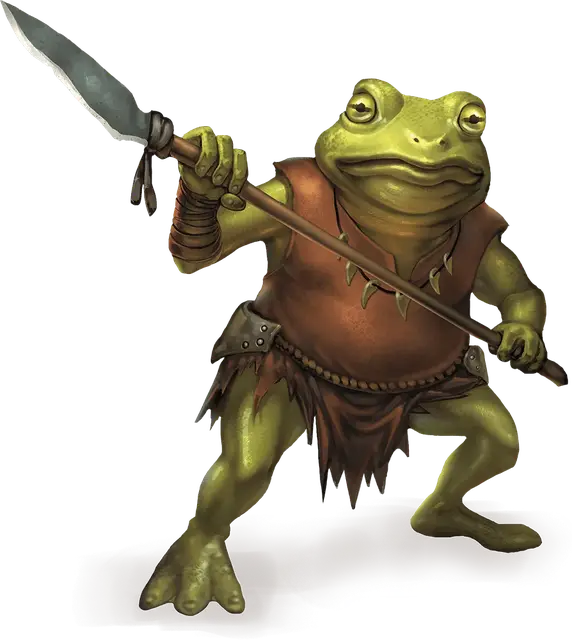

Жаболюд
Bullywug
Средний Гуманоид (Жаболюд), нейтрально-злой

Класс Доспеха 15 (шкурный доспех, щит)
Хиты 11 (2к8 + 2)
Скорость 20 футов, плавая 40 футов
| мод | спас | ||
|---|---|---|---|
| СИЛ | 12 | +1 | +1 |
| ЛОВ | 12 | +1 | +1 |
| ТЕЛ | 13 | +1 | +1 |
| мод | спас | ||
|---|---|---|---|
| ИНТ | 7 | −2 | −2 |
| МДР | 10 | +0 | +0 |
| ХАР | 7 | −2 | −2 |
Навыки Скрытность +3
Чувства пассивное Восприятие 10
Языки Язык Жаболюдов
Опасность 1/4 (50 опыта)
Бонус мастерства +2
Среда обитания Болото
Особенности
Амфибия. Жаболюд может дышать и воздухом и под водой.
Общение с лягушками и жабами. Жаболюд может обмениваться простыми понятиями с лягушками и жабами, когда говорит на языке Жаболюдов.
Болотный камуфляж. Жаболюд совершает с преимуществом проверки Ловкости (Скрытность), когда пытается спрятаться на болотистой местности.
Прыжок с места. Жаболюд совершает прыжки в длину на расстояние до 20 футов и прыжки в высоту на расстояние до 10 футов, хоть с разбегом, хоть без него.
Действия
Мультиатака. Жаболюд совершает две рукопашные атаки: одну укусом, и одну копьем.
Укус. Рукопашная атака оружием: +3 к попаданию, досягаемость 5 футов, одна цель. Попадание: Дробящий урон 3 (1к4 + 1).
Копье. Рукопашная или дальнобойная атака оружием: +3 к попаданию, досягаемость 5 футов или дистанция 20/60 футов, одна цель. Попадание: Колющий урон 4 (1к6 + 1), или колющий урон 5 (1к8 + 1), если используется двумя руками для совершения рукопашной атаки.
Описание
Жизнь жаболюда это опасность, грубость и влага. Эти земноводные гуманоиды должны постоянно находиться во влажных местах, устраивая себе жилища в дождливых лесах и сырых пещерах. Всегда голодные и невероятно злые, жаболюды при возможности берут своего противника числом, но отступают при серьезной опасности в поисках более легкой добычи.
Кожа жаболюдов обычно зеленая или серая, иногда с желтыми пятнами, что позволяет им сливаться с окружающей средой. Они носят грубые доспехи и простое оружие, и к тому же они могут сильно укусить врага, который подошел достаточно близко.
Грязные аристократы. Жаболюды считают себя правителями болот. Они следуют своего рода этикету, когда имеют дело с чужаками и друг с другом, исходя из капризов и фантазий своего лидера — самозваного владыки грязи. Жаболюды представляются звучными титулами, совершают сложные поклоны и унижаются перед владыками, бесконечно борясь за благосклонность правителей.
Для продвижения наверх среди сородичей у жаболюдов есть два пути. Можно убить своего соперника, хотя нужно постараться, чтобы сохранить свою причастность в секрете, или можно найти клад или магический предмет и принести его в дар своему господину. Жаболюд, который убивает своего соперника открыто, скорее всего, будет казнен. Поэтому для жаболюдов более характерны набеги на караваны или поселения с целью разжиться драгоценными безделушками, чтобы произвести впечатление на повелителя и завоевать его благосклонность. Безусловно, высококачественные товары, попавшие к жаболюдам, теряют свой вид. После того как подарок потерял блеск, лорд жаболюдов обычно требует, чтобы его подданные принесли ему ещё сокровищ в качестве дани.
Буйная дипломатия. Жаболюды ничего не ценят больше чем возможность править теми, кто проник на их территории. Их воины не просто пытаются убить злоумышленников, они пытаются пленить их.
Пленников доставляют к королю или королеве — необычайно большого размера жаболюду — и там они должны молить о пощаде. Взятки, сокровища и лесть помогут обмануть правителя жаболюдов, и пленнику позволят идти дальше, но сперва «гостя» попытаются впечатлить сокровищами и величием царства. Страдающие глубоким комплексом неполноценности владыки жаболюдов воображают себя королями и королевами, но отчаянно нуждаются в проявлении страха и уважения пришельцев извне.
Амфибии союзники. Жаболюды говорят на языке, похожем на кваканье лягушек, что позволяет им общаться на больших расстояниях. Новости о злоумышленниках или других событиях на болоте распространяются в течение нескольких минут с помощью это шумной системы связи.
Простые слова на этом языке понятны лягушкам и жабам. Жаболюды используют эту возможность, чтобы установить прочные связи с гигантскими лягушками, которых они используют как охранников и охотников. Большие особи иногда используются как ездовые животные. Способность лягушек заглатывать существ обеспечивает жаболюдам-охотникам легкий способ доставки добычи в деревню.